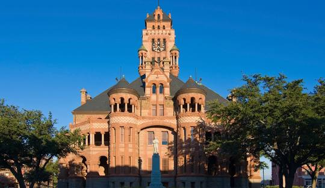

Waxahachie Texas was founded in 1850. It is a small city with a big personality. Events
happening almost every other week, it is a celebration of life an heritage. I've lived here
for two years now, and I can say
its the place to be. I look forward to spending a good
deal of my life here.
It is my favorite City because it peaceful, beautify, and is a part of a state I love. There isn't too little or too much of anything here. It strikes a perfect balance of comfort.
